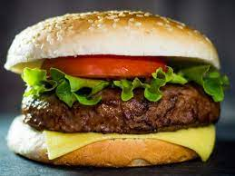
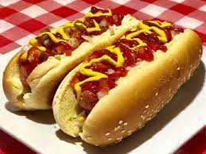
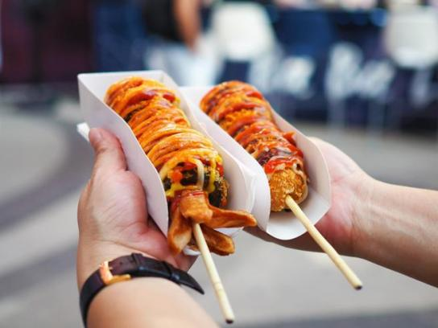
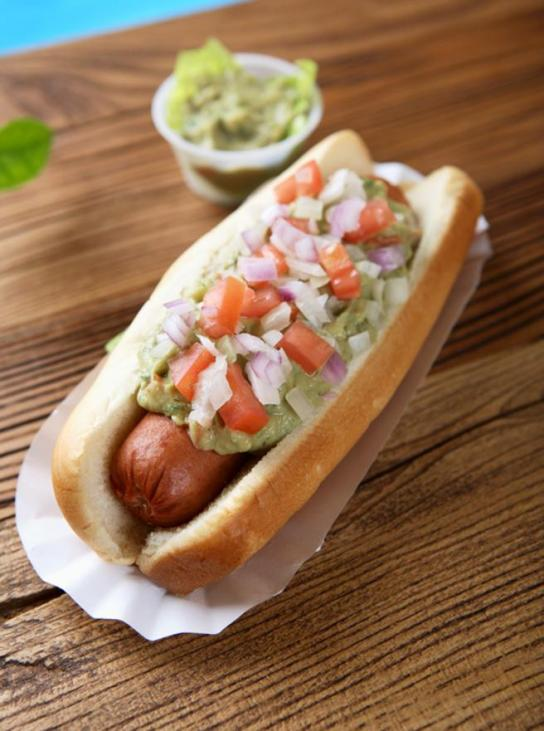
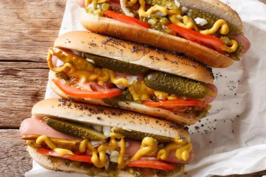

Una hamburguesa es un sándwich hecho a base de carne picada o de origen vegetal, aglutinada en forma de filete cocinado a la parrilla o a la plancha, aunque también puede freírse u hornearse. Encontramos estos tipos:

La pizza es una preparación culinaria que consiste en un pan plano, habitualmente de forma circular, elaborado con harina de trigo, levadura, agua y sal que tradicionalmente se cubre con salsa de tomate y mozzarella y se hornea a alta temperatura en un horno de leña. Encontramos estos tipos:

Es un alimento en forma de bocadillo que se genera con la combinación de una salchicha del tipo Frankfurt o vienesa hervida o frita, servida en un pan con forma alargada que suele acompañarse con algún aderezo, como salsa de tomate, mostaza, jalapeño, cebolla, y chucrut. Encontramos estos tipos:
- Empanado con arina (Corea del sur)
 - Con guacamole, cebolla y jalapeños (México)
 -
Con pepinillos (Chicago, Estados Unidos)
